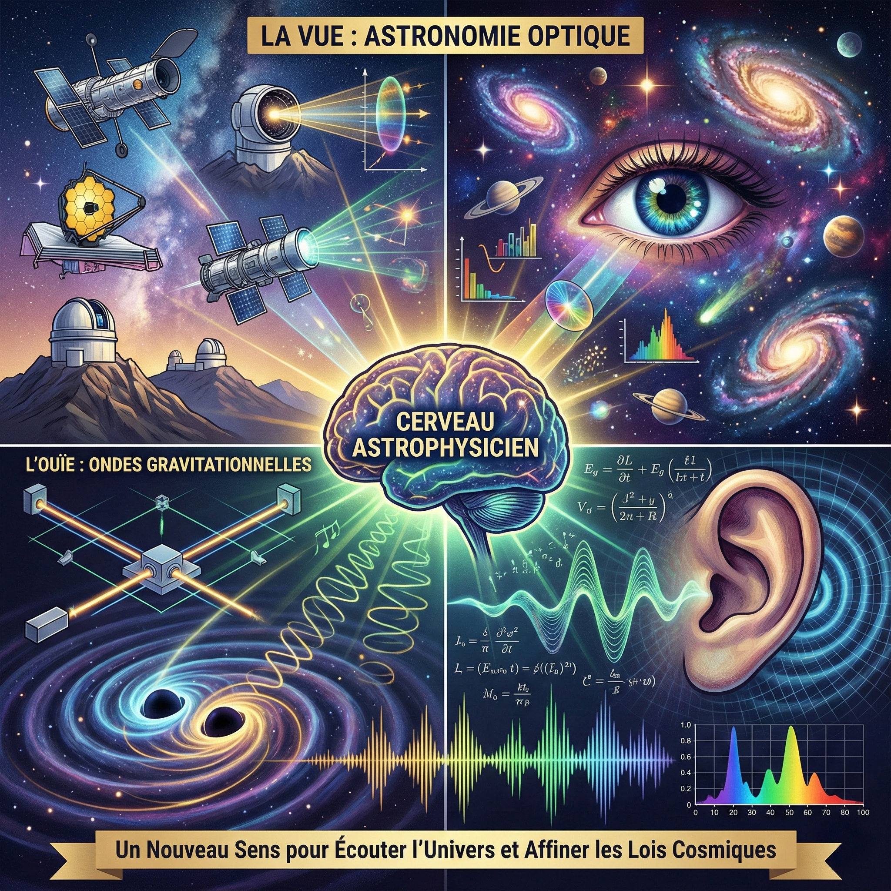

Événements X77
Association des polytechniciens de la promotion 1977
L'État peut-il encore être stratège ?
La nécessité d'un « État stratège » est régulièrement soulignée dans le débat public. Mais quelle en est la réalité ? Notre camarade Henri Wallard critique sévèrement la gestion des politiques publiques environnementales et énergétiques en France, dénonce une dérive technocratique et des décisions incohérentes, et proposera des pistes pour sortir de cette imposture. Inscriptions jusqu'au 12 novembre.

Retrouvailles à Palaiseau
La promotion a redécouvert le plateau de sa jeunesse : présentation de l'École, visite du SIRTA, l'observatoire du climat que la promotion a soutenu, Drahi X-Novation Center et X-Fab, tour du campus, balade nostalgique et dîner. Récapitulatif en images, vidéos du SIRTA et photos de la journée.
Le New Space est-il devenu fou ?
Auteur de l'essai « L'espace des fous », notre camarade distingue l'espace utile, seul socle des ambitions stratégiques et politiques, de l'économie du récit qui porte le New Space. Apollo et Artémis, SpaceX et Starlink, petits lanceurs européens, mirage de l'exploitation minière des astéroïdes, accords Artémis et gouvernance européenne : une soirée de débats sans langue de bois.

Les juridictions consulaires : quels rôles et quels défis ?
Le Tribunal des activités économiques de Paris (ex-Tribunal de commerce), présidé par notre camarade Patrick Sayer, est la seule juridiction consulaire au sens strict, composée de juges non professionnels issus du monde des affaires. Cette conférence nous a permis de mieux connaître les principaux enjeux de ces juridictions, qui sont au cœur d'un équilibre délicat entre expertise économique, exigences de l'État de droit, efficacité et rapidité, et indépendance et légitimité démocratique.

Ondes gravitationnelles : après la vue, l'ouïe
Cette conférence rassemble le podcast, les slides, la visio, la synthèse et la transcription enrichie du dîner-débat X77 consacré à l'astronomie des ondes gravitationnelles. Une exploration fascinante de cette nouvelle fenêtre sur l'univers, qui nous permet désormais d'écouter le cosmos après l'avoir observé visuellement pendant des siècles.